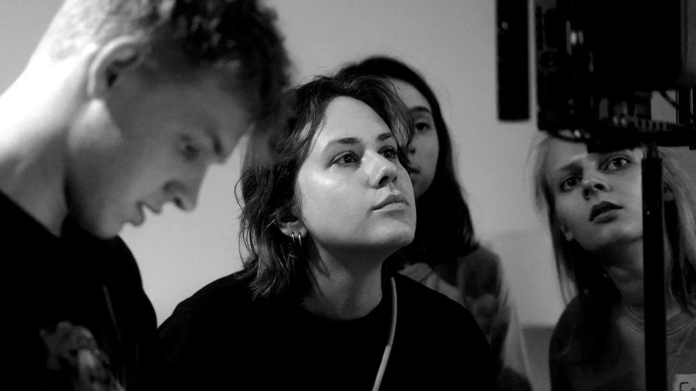

(Обо мне)
Ксения Некипелова
Режиссер кино и
междисциплинарный художник
Ксения Некипелова — режиссер и междисциплинарный художник из Москвы. Работает с игровым и документальным кино, перформансом и партиципаторным искусством. Учится в Московской школе нового кино в мастерской игрового кино Дмитрия Мамулии. Ее короткометражный фильм «Aura» вошел в число финалистов Международного кинофестиваля «Святая Анна» (2026).
До кино изучала социальные науки и современное искусство в НИУ ВШЭ, работала на выставочных и фестивальных проектах, в том числе на Триеннале российского современного искусства в музее «Гараж». Соединяя наблюдение и постановку, она использует кино как точку встречи изображения, текста, движения и коллективного опыта.
Авторский подход
Я снимаю игровое и документальное кино о том, как люди сближаются, помнят и ищут свое место. Драматургия моих работ рождается из пространства, жестов и случайных встреч. Я соединяю наблюдение с постановкой, оставляя место неожиданному.
